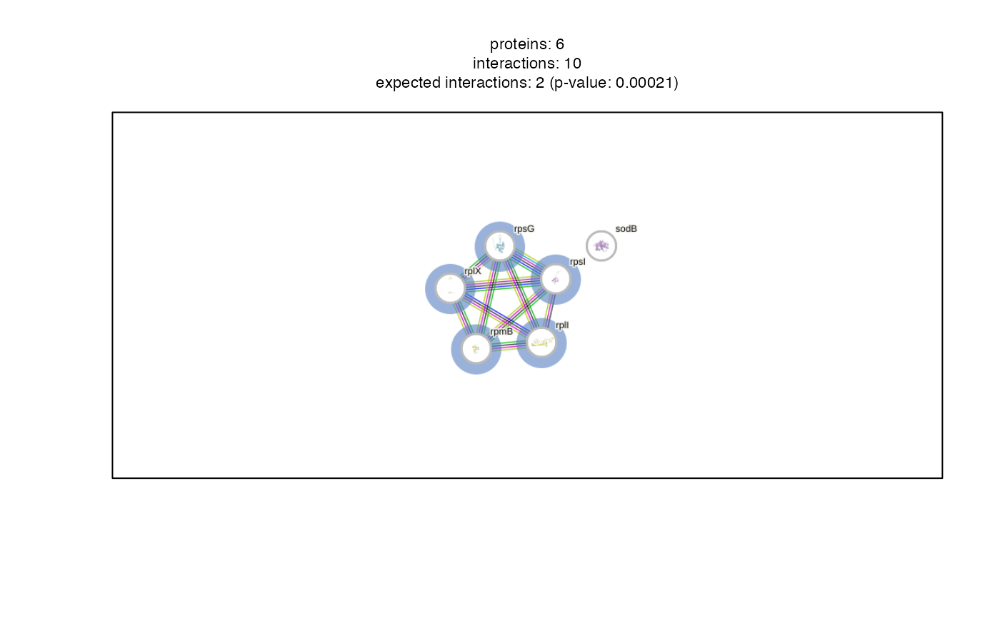

R/analyse_functional_network.R
analyse_functional_network.RdThe STRING database provides a resource for known and predicted protein-protein interactions.
The type of interactions include direct (physical) and indirect (functional) interactions.
Through the R package STRINGdb this resource if provided to R users. This function
provides a convenient wrapper for STRINGdb functions that allow an easy use within the
protti pipeline.
analyse_functional_network(
data,
protein_id,
string_id,
organism_id,
version = "11.5",
score_threshold = 900,
binds_treatment = NULL,
halo_color = NULL,
plot = TRUE
)a data frame that contains significantly changing proteins (STRINGdb is only able to plot 400 proteins at a time so do not provide more for network plots). Information about treatment binding can be provided and will be displayed as colorful halos around the proteins in the network.
a character column in the data data frame that contains the protein
accession numbers.
a character column in the data data frame that contains STRING database
identifiers. These can be obtained from UniProt.
a numeric value specifying an organism ID (NCBI taxon-ID). This can be obtained from here. H. sapiens: 9606, S. cerevisiae: 4932, E. coli: 511145.
a character value that specifies the version of STRINGdb to be used. Default is 11.5.
a numeric value specifying the interaction score that based on STRING has to be between 0 and 1000. A score closer to 1000 is related to a higher confidence for the interaction. The default value is 900.
a logical column in the data data frame that indicates if the
corresponding protein binds to the treatment. This information can be obtained from different
databases, e.g UniProt.
optional, character value with a color hex-code. This is the color of the halo of proteins that bind the treatment.
a logical that indicates whether the result should be plotted or returned as a table.
A network plot displaying interactions of the provided proteins. If
binds_treatment was provided halos around the proteins show which proteins interact with
the treatment. If plot = FALSE a data frame with interaction information is returned.
# \donttest{
# Create example data
data <- data.frame(
uniprot_id = c(
"P0A7R1",
"P02359",
"P60624",
"P0A7M2",
"P0A7X3",
"P0AGD3"
),
xref_string = c(
"511145.b4203;",
"511145.b3341;",
"511145.b3309;",
"511145.b3637;",
"511145.b3230;",
"511145.b1656;"
),
is_known = c(
TRUE,
TRUE,
TRUE,
TRUE,
TRUE,
FALSE
)
)
# Perform network analysis
network <- analyse_functional_network(
data,
protein_id = uniprot_id,
string_id = xref_string,
organism_id = 511145,
binds_treatment = is_known,
plot = TRUE
)

network
#> NULL
# }